library(TTR)
library(forecast)
df <- read.csv("Amtrak data.csv")
y <- ts(df$Ridership, start = c(1991,1), end = c(2004, 3), freq = 12)
plot(y, xlab = "Time", ylab = "Ridership")
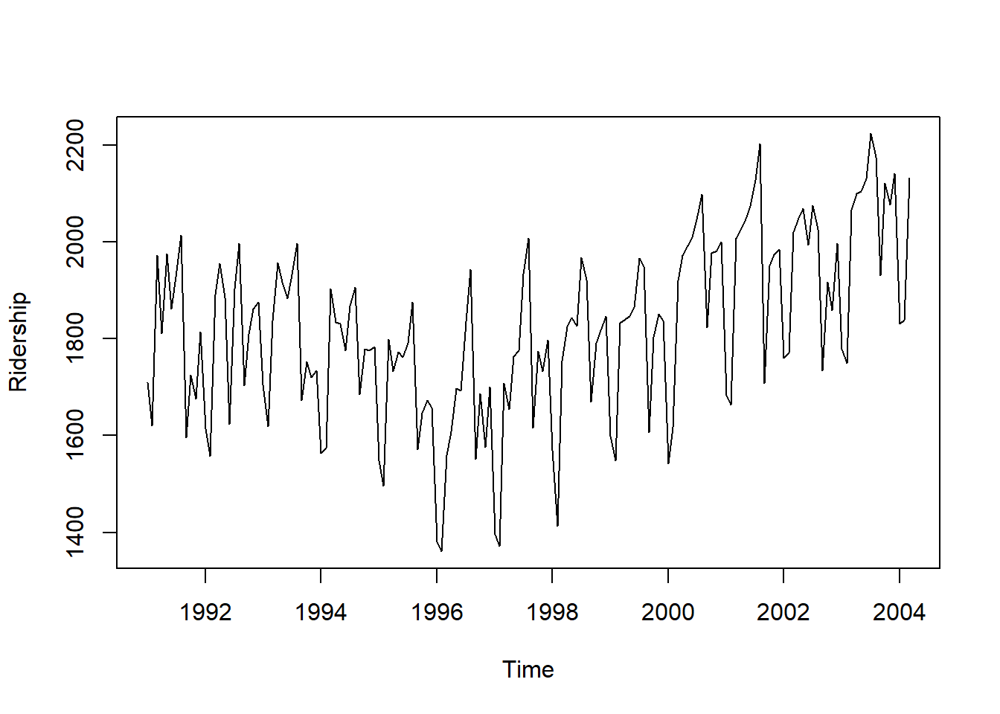
library(TTR)
library(forecast)
df <- read.csv("Amtrak data.csv")
y <- ts(df$Ridership, start = c(1991,1), end = c(2004, 3), freq = 12)
plot(y, xlab = "Time", ylab = "Ridership")plot(y, xlab = "Time", ylab = "Ridership")
# create a moving average series
k = 16 # set the moving average
y_sma = SMA(y, n = k)
# plot the moving average series
lines(y_sma, col = "red")plot(y, xlab = "Time", ylab = "Ridership")
# create a moving average series
w = .7
y_ema = EMA(y, ratio = 1-w)
# plot the moving average series
lines(y_ema, col = "red")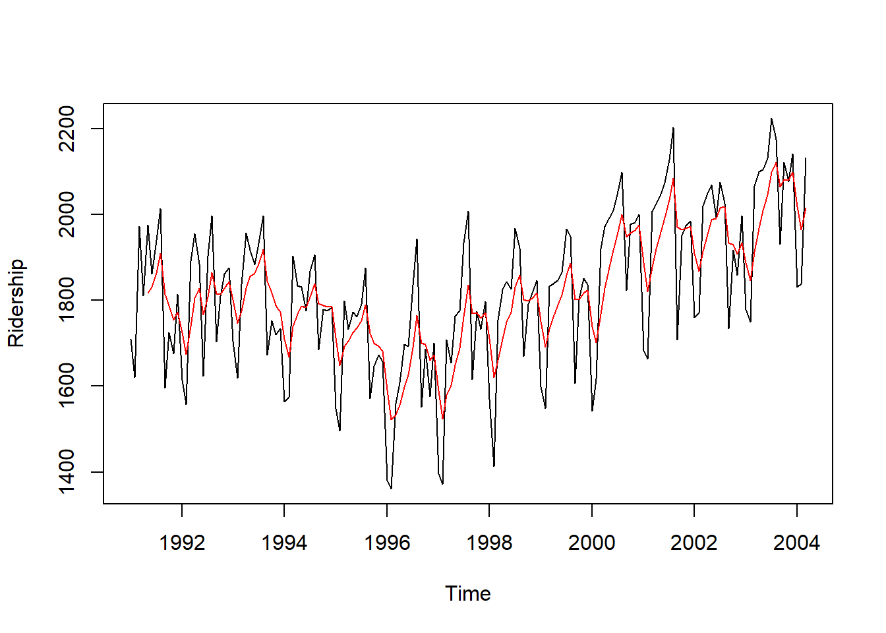
ourDecomposition <- decompose(y, type="additive")
plot(ourDecomposition)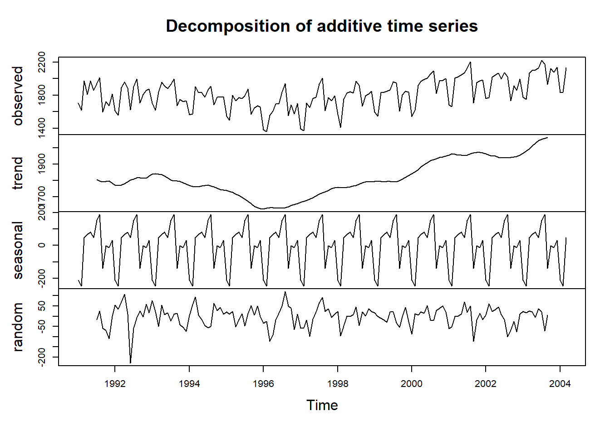
ourDecomposition <- decompose(y, type="multiplicative")
plot(ourDecomposition)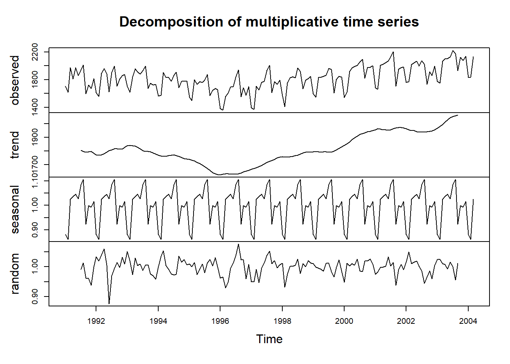
ourDecomposition <- stl(y, s.window = "periodic")
plot(ourDecomposition)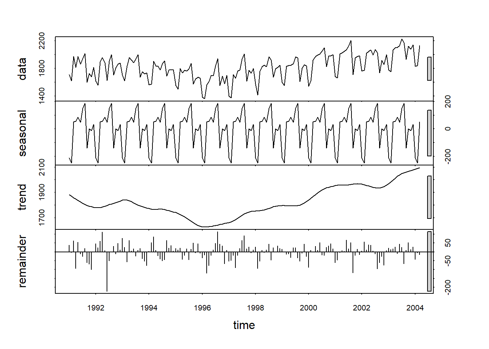
acf(y)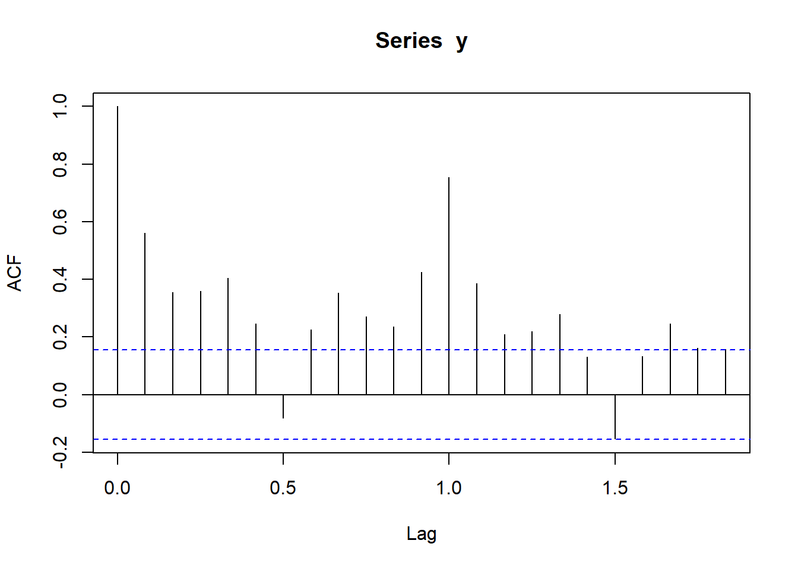
pacf(y)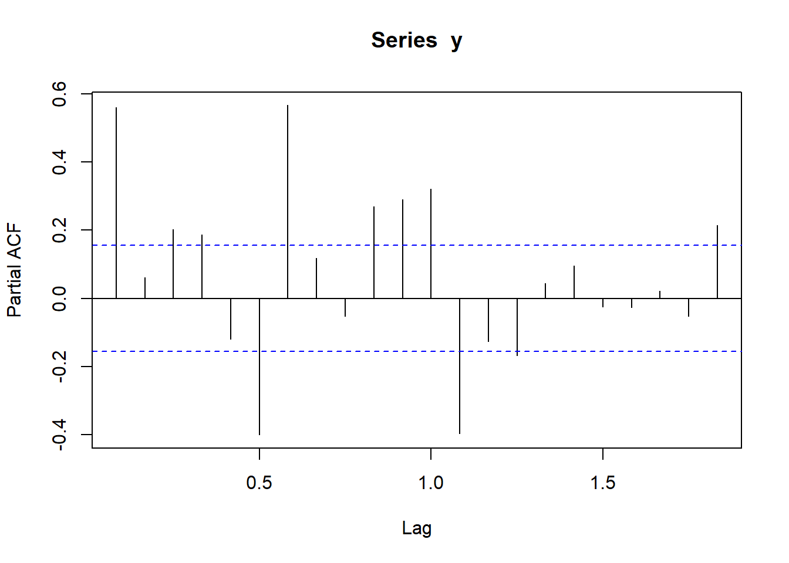
# data partition
nValid <- 36
nTrain <- length(y) - nValid
train.ts <- window(y, start = c(1991, 1), end = c(1991, nTrain))
valid.ts <- window(y, start = c(1991, nTrain + 1), end = c(1991, nTrain + nValid))
# Modeling
#basic models
# average method: forecast by the average of the training series
forecast4 = meanf(train.ts, h = nValid, level = 0)
# naive: forecast by the last observation of the series
forecast5 = naive(train.ts, h = nValid, level = 0)
# seasonal naive: forecast by the last season
forecast6 = snaive(train.ts, h = nValid, level = 0)
# drift: drawing the line from the first to the last observation
forecast7 = rwf(train.ts, h = nValid, level = 0, drift = TRUE)
# more advanced model
model1 <- tslm(train.ts ~ trend + I(trend^2) + season)
model2 = auto.arima(train.ts)
model3 = HoltWinters(train.ts, alpha=TRUE,
beta=TRUE,
gamma=TRUE)
# forecasting
forecast1 = forecast(model1, h = nValid, level = 0)
forecast2 = forecast(model2, h = nValid, level = 0)
forecast3 = forecast(model3, h = nValid, level = 0)
# plotting forecast
plot(forecast1)
lines(valid.ts, col = 'red')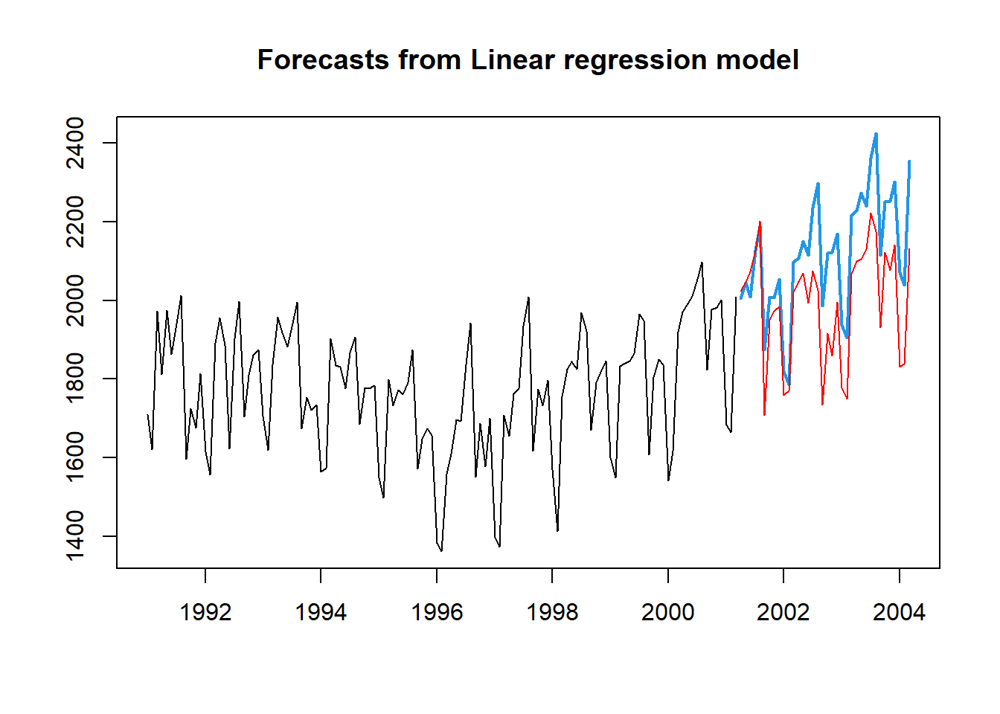
plot(forecast2)
lines(valid.ts, col = 'red')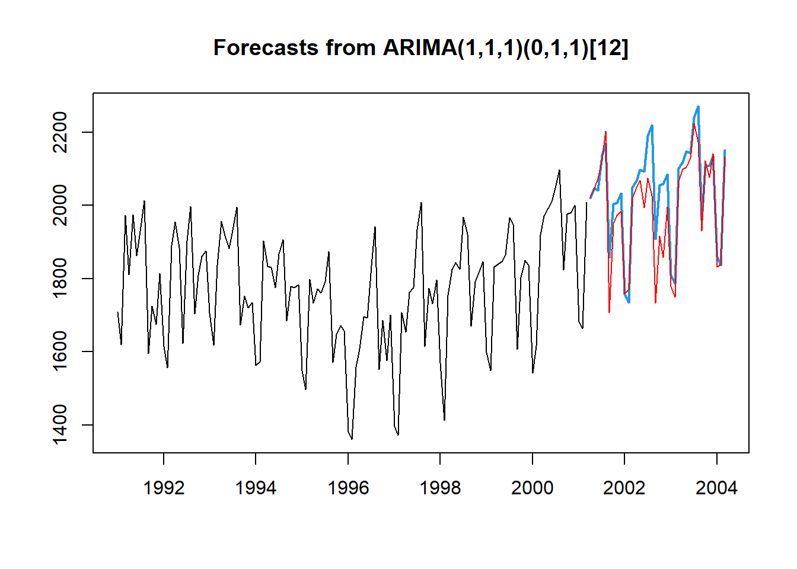
plot(forecast3)
lines(valid.ts, col = 'red')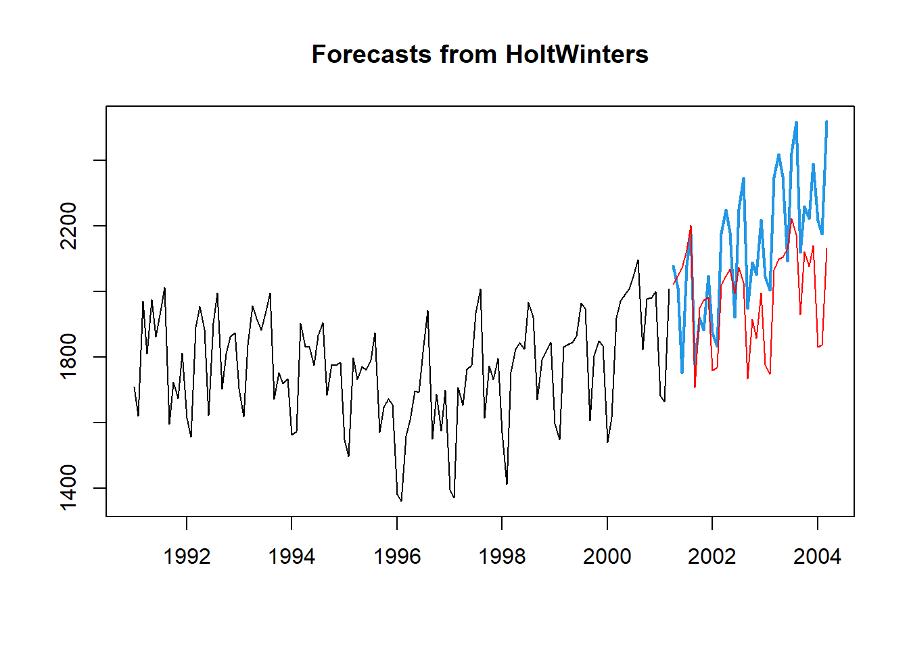
# accuracy
a1 = accuracy(forecast1$mean, valid.ts)
a2 = accuracy(forecast2$mean, valid.ts)
a3 = accuracy(forecast3$mean, valid.ts)
rbind(a1, a2, a3) ME RMSE MAE MPE MAPE ACF1 Theil's U
Test set -126.16535 153.25066 131.7250 -6.431495 6.698700 0.7069291 0.8960679
Test set -45.98599 76.50042 53.0434 -2.388290 2.739223 0.5795161 0.4483051
Test set -145.42788 211.82780 181.9224 -7.399418 9.176443 0.6143175 1.2449132Make sure the residual looks like white-noise The residuals should have no autocorrelation. The residuals should have a mean zero The residuals should have constant variance The residuals should be normally distributed
checkresiduals(model1)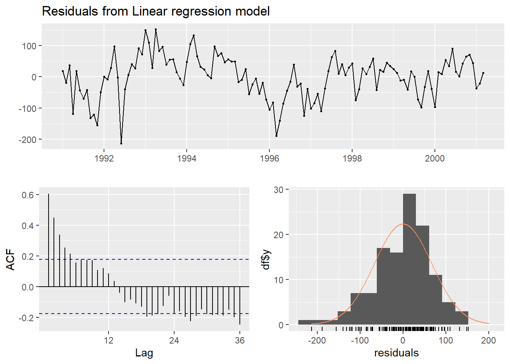
Breusch-Godfrey test for serial correlation of order up to 24
data: Residuals from Linear regression model
LM test = 57.142, df = 24, p-value = 0.0001599checkresiduals(model2)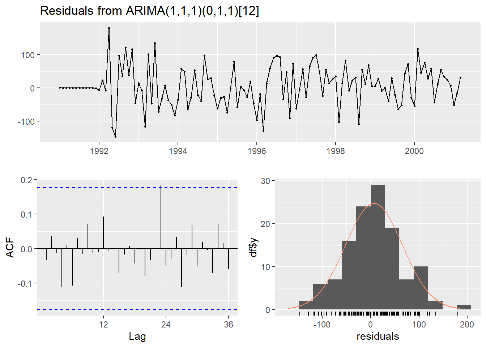
Ljung-Box test
data: Residuals from ARIMA(1,1,1)(0,1,1)[12]
Q* = 13.302, df = 21, p-value = 0.8977
Model df: 3. Total lags used: 24checkresiduals(model3)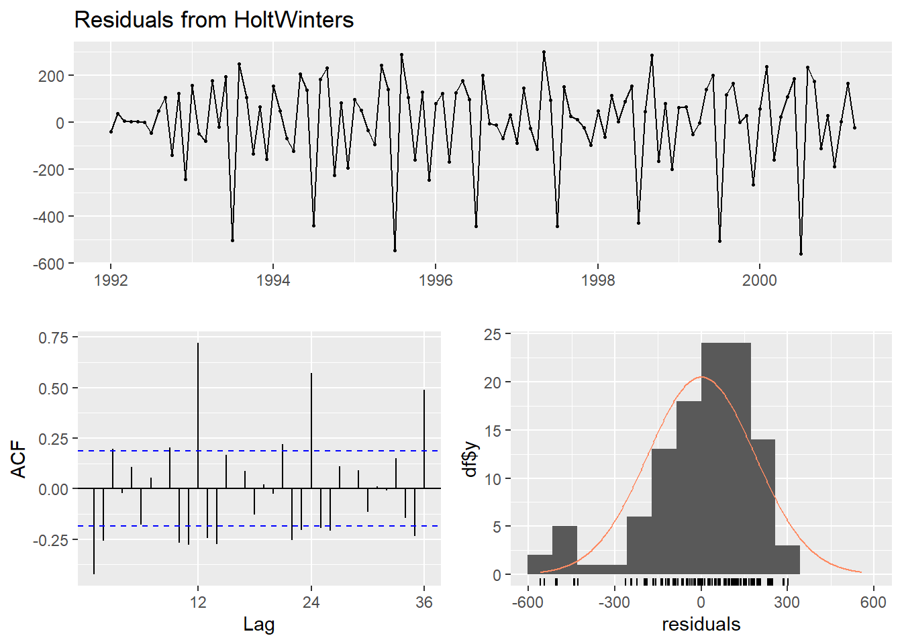
Ljung-Box test
data: Residuals from HoltWinters
Q* = 167.97, df = 22, p-value < 2.2e-16
Model df: 0. Total lags used: 22